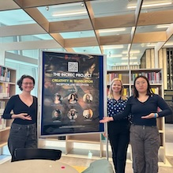
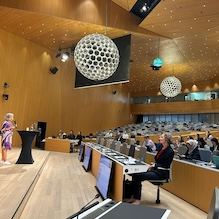
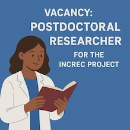
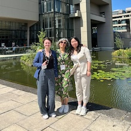
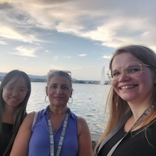
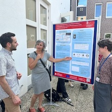
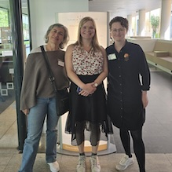

Successful European Researchers Night 2025 in Groningen
The INCREC team participated in the European Researchers' Night science festival which took place on the 26th of September in the Forum in Groningen. We organized interactive guessing games to showcase our research about creativity, translation, technology and reception of translated texts to the general audience. The evening was full of insightful conversations and questions from the curious public!
More information about ERN can be found here.
26-09-2025
Ana Guerberof-Arenas was invited as keynote speaker in Geneve
The International Federation of Translators XXIII World Congress took place in Geneva from 4th to 6th September. INCREC project PI, Prof Ana Guerberof Arenas, was invited as a keynote speaker to this event that is celebrated every three years by the federation. Her keynote, INCREC project: creative process in translation and the user experience, examined how creativity is conceptualised in the social sciences and in translation studies, as well as its relationship with technology. Throughout the talk, she presented results from different studies carried out under the CREAMT project (2020-2022) and the new INCREC research project (2023-2028), which investigates the creative process of professional literary and audiovisual translators in order to create specific taxonomies on that process, and to explore whether the use of technology, e.g. machine translation, can be advantageous or limit creativity.
More info about the program can be found here.
04-09-2025
INCREC is looking for a new team member
The INCREC project is looking for a new team member: Postdoc in Creativity, Translation and Technology. Please come an join the INCREC team at Rijksuniversiteit Groningen! You can apply for this position until 12 October 11:59pm / before 13 October 2025 Dutch local time (CET). Interviews with selected candidates will be held on-line between 10th–14th November 2025.
The full vacancy can be found here.
04-09-2025
Nastja wrapped up her first conference season
In July, Nastja Shaboltas wrapped up her first conference season by attending the EST congress in Leeds which takes place every three years. She presented her research about creative process in literary translation along with other members of the INCREC project who talked about creativity in subtitling (Xiaolu Wang) and use of machine translation in healthcare context (Ana Guerberof Arenas). The congress was an engaging mix of presentations, translation-related discussions, a futuristic conference venue and friendly, cooperative atmosphere!
More information on the conference can be found here.
02-07-2025
Kyo Gerrits joined her first major conference
In June, Kyo Gerrits joined Ana Guerberof Arenas at the MT Summit in Geneva for her first major conference experience. Together, they presented the results of their pilot study exploring how Dutch readers respond to different levels of translation and creativity in an originally English short story. They also presented a paper on optimising ChatGPT for creativity, in collaboration with one of our former master’s students, Sophie Du, who also attended the conference.
More information on the conference and papers can be found here.
23-06-2025
Successful TABU Dag conference in Groningen
The INCREC team has recently participated in the TABU dag conference at the Faculty of Arts of the University of Groningen. We enjoyed two full days of engaging talks about linguistics and its intersection with technology, psychology and other disciplines! Nastja Shaboltas gave a presentation about macro stages of the creative process in literary translation. Xiaolu Wang participated in a poster session also talking about creative macro stages but in subtitling. Unfortunately, Kyo Gerrits couldn't attend the second day of the conference due to train strikes but Ana Guerberof-Arenas and Nastja were happy to help her out and present the poster about Kyo's research on readers' reception of machine-translated literary texts.
More information on the TABU Dag can be found here.
12-06-2025
INCREC at the NITS conference
Nastja Shaboltas, Kyo Gerrits and Ana Guerberof-Arenas attended the NITS conference in Tilburg on Friday, June 6, where they each presented their research on (machine) translation, creativity, and its impact on readers. Xiaolu Wang was supposed to present a poster too but was unable to due to the train strikes. Fortunately Nastja was happy to step in and present it for her. It was a very engaging, interesting and insightful conference!
More information on the conference can be found here.
06-06-2025
Uncovering the macro creative process in subtitling
Ana Guerberof Arenas and Xiaolu Wang attended Media4all in Hong Kong from 28th to 30th May. Xiaolu Wang presented at the conference, discussing preliminary results from WP1 on the major stages of the subtitling creative process and how these stages progress over time.
You can find more information about the conference here.
29-05-2025
Writing in the age of AI
 As part of INCREC, Ana Guerberof Arenas, Pilar Uribe Silva, from the Computational Linguistcs Group and Sheila Castilho from Dublin City University are organising a creative writing workshop in collaboration with the Jantina Tammes school within the Language and AI coordinated by Tommaso Caselli. The workshop will take place on May 6th 2025 and the goal is to explore creativity while writing and how this is affected by our interaction with generative AI.
You can find more information here.
As part of INCREC, Ana Guerberof Arenas, Pilar Uribe Silva, from the Computational Linguistcs Group and Sheila Castilho from Dublin City University are organising a creative writing workshop in collaboration with the Jantina Tammes school within the Language and AI coordinated by Tommaso Caselli. The workshop will take place on May 6th 2025 and the goal is to explore creativity while writing and how this is affected by our interaction with generative AI.
You can find more information here.
06-05-2025
Creativité et technologie, et maintenant?
 Ana Guerberof Arenas was invited as a keynote speaker by Platform Frans Netherlands to give a keynote presentation about literary translation and artifical intelligence (AI) during the third edition of the La Fabrique de la traduction littéraire.
You can find more information about the program here.
Ana Guerberof Arenas was invited as a keynote speaker by Platform Frans Netherlands to give a keynote presentation about literary translation and artifical intelligence (AI) during the third edition of the La Fabrique de la traduction littéraire.
You can find more information about the program here.
21-03-2025
AI will kill the translation star?
 Ana Guerberof Arenas was invited as a speaker to talk about the role of AI and translation together with Elisenda Bernal as part of the XXXIII Seminari de Traducció organised by Catalan Association of Writers and Literary Translators in Barcelona.
More info about the program and talk can be found here.
Ana Guerberof Arenas was invited as a speaker to talk about the role of AI and translation together with Elisenda Bernal as part of the XXXIII Seminari de Traducció organised by Catalan Association of Writers and Literary Translators in Barcelona.
More info about the program and talk can be found here.
01-03-2025
What the Harm?
 The paper 'What the Harm? Quantifying the Tangible Impact of Gender Bias in Machine Translation with a Human-centered Study by Beatrice Savoldi, Sara Papi, Matteo Negri, Ana Guerberof-Arenas, Luisa Bentivogli won the social impact award at the EMNLP conference.
You can read the full paper via the link.
The paper 'What the Harm? Quantifying the Tangible Impact of Gender Bias in Machine Translation with a Human-centered Study by Beatrice Savoldi, Sara Papi, Matteo Negri, Ana Guerberof-Arenas, Luisa Bentivogli won the social impact award at the EMNLP conference.
You can read the full paper via the link.
01-03-2025
The INCREC project: creativity and technology in translation
Ana Guerberof Arenas was invited as a keynote speaker at The 1st Workshop on Creative-text Translation and Technology Proceedings to talk about the INCREC project. She gave an overview of how creativity is conceptualised in the social sciences, mainly psychology and sociology, including different frameworks that facilitate analysing creativity.
More information about the workshop and Ana's talk can be found here.
27-06-2024